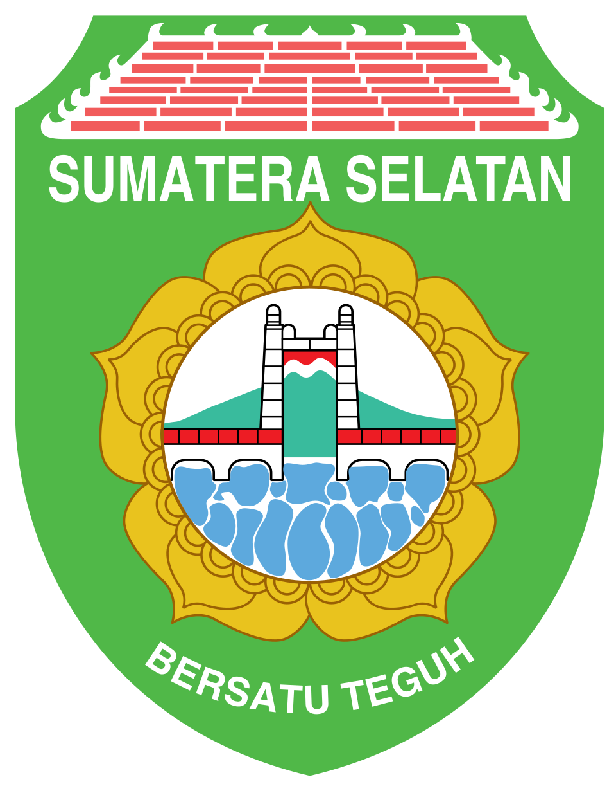
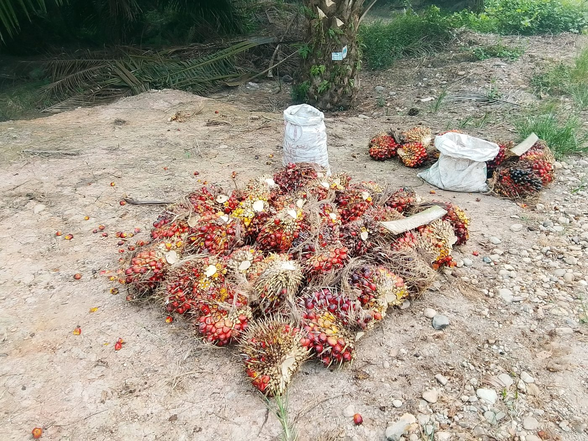
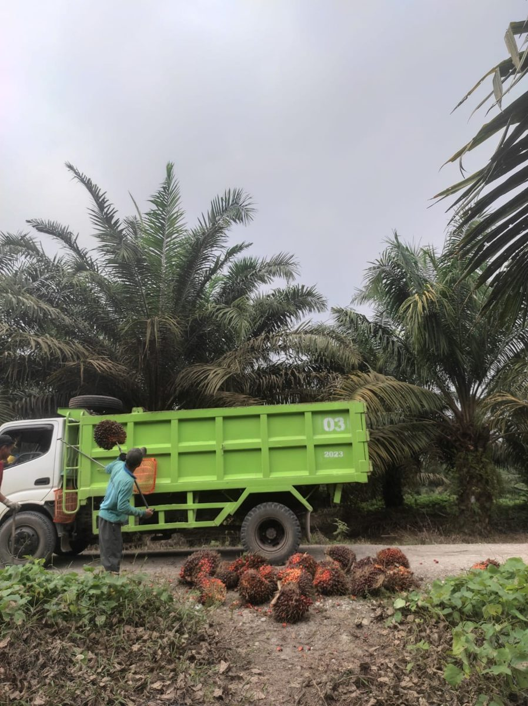

PRAKTIK KERJA LAPANGAN
PERKEBUNAN KELAPA SAWIT
(Elaeis guineensis Jacq.)
DI PT. DENDY MARKER INDAH LESTARI

Disusun oleh:
| NAMA | : Fahry Adhwa Ramdhani |
| NISN | : 0092684269 |
| PROGRAM KEAHLIAN | : Agribisnis Tanaman Perkebunan |
SEKOLAH MENENGAH KEJURUAN (SMK)
PERTANIAN NEGERI 2 TUGUMULYO
PROVINSI SUMATERA SELATAN
2026/2027
HALAMAN PENGESAHAN
PERKEBUNAN KELAPA SAWIT (Elaeis guineensis Jacq.)
DI PT. DENDY MARKER INDAH LESTARI
DESA BINGIN RUPIT, KECAMATAN MUARA RUPIT, KABUPATEN MUSI RAWAS UTARA (MURATARA) / MUSI RAWAS, SUMATERA SELATAN
Laporan Praktik Kerja Lapangan (PKL)
Disusun sebagai salah satu syarat mengikuti Ujian Akhir Semester pada Sekolah Menengah Kejuruan (SMK) Pertanian Negeri 2 Tugumulyo Provinsi Sumatera Selatan Tahun Ajaran 2026/2027
Menyetujui
Ketua Panitia Pelaksana
ELIA SUSILAWATI, M.Pd
NIPPPK.19820807 202221 2 029
Pembimbing Intern
ROSMALA DEWI, S.Pd
NIP.
Mengetahui
Kepala SMK Pertanian Negeri 2 Tugumulyo
Dr. DONNI PESTALOZI, M.Pd
NIP.19811012 200501 1 009
KATA PENGANTAR
Puji syukur penulis panjatkan ke hadirat Allah Swt. yang telah melimpahkan serta memberikan rahmat dan karunia-Nya sehingga penulis dapat menyelesaikan pembuatan laporan Praktik Kerja Lapangan (PKL) Sekolah Menengah Kejuruan (SMK) Pertanian Negeri 2 Tugumulyo yang rangkaian kegiatannya telah dilaksanakan penulis.
Pada kesempatan ini, penulis mengucapkan terima kasih kepada:
Tak ada yang luput dari kesalahan, yang artinya penulis dalam menyusun laporan PKL ini memiliki banyak kesalahan dan kekurangan. Maka dari itu, penulis mengharapkan kritik dan saran serta ulasan agar laporan ini dapat bermanfaat, terutama bagi siswa-siswi Sekolah Menengah Kejuruan (SMK) Pertanian Negeri 2 Tugumulyo.
Musi Rawas,
Hormat saya
Penulis,
Fahry Adhwa Ramdhani
DAFTAR ISI
Kelapa sawit (Elaeis guineensis Jacq.) merupakan salah satu tanaman perkebunan penting di Indonesia. Tanaman ini menghasilkan minyak yang dimanfaatkan sebagai bahan baku berbagai kebutuhan, mulai dari minyak goreng hingga produk industri lainnya. Budidaya kelapa sawit juga membuka lapangan kerja dan sumber penghasilan bagi banyak orang di daerah perkebunan, termasuk di Provinsi Sumatera Selatan.
Budidaya kelapa sawit membutuhkan pemeliharaan yang tepat dan berkelanjutan agar produksi tandan buah segar (TBS) tetap baik. Kegiatan seperti pemotongan pelepah, pemupukan, pengendalian gulma, dan panen harus dilakukan sesuai prosedur. Pengetahuan tentang kegiatan tersebut tidak cukup dipelajari di dalam kelas, sehingga siswa perlu melihat dan mengerjakannya langsung di kebun.
Praktik Kerja Lapangan (PKL) merupakan bagian dari pembelajaran di Sekolah Menengah Kejuruan (SMK) yang mempertemukan siswa dengan dunia kerja yang sesungguhnya. Melalui PKL, siswa Program Keahlian Agribisnis Tanaman Perkebunan dapat menerapkan ilmu yang diperoleh di sekolah, mengenal disiplin dan budaya kerja, serta menambah keterampilan.
Berdasarkan hal tersebut, penulis melaksanakan PKL di PT. Dendy Marker Indah Lestari yang berlokasi di Desa Bingin Rupit, Kecamatan Muara Rupit, Kabupaten Musi Rawas Utara, Sumatera Selatan. Laporan ini disusun untuk menyampaikan kegiatan dan hal-hal yang dipelajari penulis selama PKL, serta sebagai salah satu syarat mengikuti Ujian Akhir Semester.
| Waktu | : 6 Juli 2026 sampai 26 November 2026 |
| Tempat | : PT. Dendy Marker Indah Lestari (Sei Mandang Estate), Desa Bingin Rupit, Kecamatan Muara Rupit, Kabupaten Musi Rawas Utara, Sumatera Selatan |
| Pembimbing lapangan | : Bapak Fahri Alwi (asisten perkebunan kelapa sawit) |
Data dalam laporan ini diperoleh melalui:
PT. Dendy Marker Indah Lestari, disingkat DMIL dan di beberapa dokumen ditulis Dendymarker Indah Lestari, adalah perusahaan yang bergerak di bidang perkebunan dan pengolahan kelapa sawit di wilayah Musi Rawas, Provinsi Sumatera Selatan. Perusahaan ini berdiri pada tahun 1996 dan saat ini merupakan anak perusahaan SIPEF Group, kelompok usaha agribisnis asal Belgia yang juga mengelola perkebunan di beberapa daerah lain di Indonesia.
Pada tahun 2017, SIPEF membeli 95% saham PT. Dendy Marker Indah Lestari. SIPEF mengambil alih pengelolaan perusahaan mulai 1 Agustus 2017 dengan tujuan mengembangkan usahanya di wilayah Musi Rawas, termasuk kebun plasma yang dikelola petani seluas sekitar 2.780 hektare.
Sejak pengambilalihan tersebut, kebun perusahaan terus dikembangkan dan diremajakan, serta pabrik kelapa sawit tetap dikelola. Perusahaan juga mengikuti sertifikasi RSPO (Roundtable on Sustainable Palm Oil), yaitu standar produksi minyak sawit berkelanjutan.
| Nama perusahaan | : PT. Dendy Marker Indah Lestari (DMIL) |
| Tahun berdiri | : 1996 |
| Induk perusahaan | : SIPEF Group |
| Bidang usaha | : Perkebunan kelapa sawit dan pengolahan kelapa sawit |
| Lokasi tempat PKL | : Sei Mandang Estate, Desa Bingin Rupit, Kecamatan Muara Rupit, Kabupaten Musi Rawas Utara, Sumatera Selatan |
| Lokasi pabrik kelapa sawit | : Desa Karang Dapo 1, Kecamatan Karang Dapo, Kabupaten Musi Rawas Utara, Sumatera Selatan 31654 |
Kabupaten Musi Rawas Utara (Muratara) berada di Provinsi Sumatera Selatan. Penulis melaksanakan PKL di Sei Mandang Estate milik PT. Dendy Marker Indah Lestari. Lokasi PKL tercatat di Desa Bingin Rupit, Kecamatan Muara Rupit, sedangkan pabrik kelapa sawit perusahaan berada di Desa Karang Dapo 1, Kecamatan Karang Dapo.
Selama melaksanakan PKL di Sei Mandang Estate, penulis ikut melakukan dan mempelajari beberapa kegiatan perkebunan kelapa sawit. Bab ini memuat enam kegiatan yang dipelajari, yaitu pemotongan pelepah (pruning), pengendalian gulma merambat (creeper weeding), pemupukan, sensus buah hitam (Black Bunch Count), panen, serta penanganan hasil panen dan grading di TPH.
a. Pengertian. Pruning adalah kegiatan membuang dan memotong pelepah kelapa sawit yang sudah tua, kering, rusak, atau tidak produktif.
b. Cara Pruning. Pruning dilakukan dengan memotong 2 sampai 3 pelepah di bawah tandan buah yang telah dipanen.
c. Frekuensi. Pruning dikerjakan setiap 3 sampai 4 bulan sekali dan biasanya dilakukan bersamaan dengan kegiatan panen.
d. Penyusunan Pelepah.
a. Pengertian. Creeper weeding adalah kegiatan membersihkan gulma tanaman merambat, menjalar, dan melilit pada batang utama tanaman kelapa sawit.
b. Tujuan.
c. Gulma Sasaran. Gulma yang dibersihkan dalam creeper weeding, misalnya Mucuna bracteata yang melilit tanaman.
a. Pengertian. Pemupukan adalah penambahan unsur hara kepada tanah atau tanaman. Pada nursery, tanah yang kurang subur atau unsur hara yang tercuci karena curah hujan tinggi dapat diperbaiki melalui pemupukan.
b. Jenis Pupuk. Jenis pupuk yang digunakan antara lain MOP, dolomit, NPK 13, dan NPK 12. Analisis pupuk dilakukan untuk mengetahui kandungan nutrisi pada pupuk.
c. Perencanaan dan Permintaan Pupuk.
d. Transportasi Pupuk. Untuk aplikasi, pupuk diangkut ke dalam kebun dengan prinsip FIFO (First In First Out). Pupuk diecer dalam beberapa tumpukan pada lokasi kerja.
e. Aplikasi Pupuk.
f. Aplikasi Pupuk Secara Mekanis.
g. Kondisi Cuaca. Bila hujan gerimis berkepanjangan, pemupukan dihentikan sementara dan pupuk ditutup, kemudian pemupukan dilanjutkan bila cuaca cerah. Bila hujan deras, pupuk harus dibawa kembali ke gudang. Pemupukan tidak dapat dilakukan bersamaan dengan kegiatan lain seperti spraying dan panen.
h. Lingkungan.
i. Keselamatan dan APD.
j. Pelaksanaan.
k. Kapasitas Kerja. Kapasitas kerja per orang menurut dosis pupuk per pokok:
| Dosis per pokok | Kapasitas kerja |
| kurang dari 100 gram | 5 - 7 ha |
| 101 - 500 gram | 4 - 5 ha |
| 501 gram - 1 kg | 3,4 - 3,9 ha |
| lebih dari 1 kg - 1,5 kg | 3 - 3,3 ha |
| lebih dari 1,5 kg - 2 kg | 1,8 - 2 ha |
Dengan dosis NPK 12 sebanyak 1,25 kg per pokok, kapasitas kerja per orang adalah 3 sampai 3,3 hektar.
a. Pengertian dan Tujuan. Black Bunch Count (BBC) adalah sensus buah hitam, yaitu menghitung jumlah tandan hitam setiap bulan untuk mengestimasi produksi yang akan dicapai dalam 3 bulan ke depan. Tandan buah memerlukan waktu 6 bulan untuk menjadi buah siap panen. Tujuan BBC adalah menghitung potensi produksi dalam 3 bulan ke depan.
b. Waktu dan Frekuensi. BBC dilaksanakan setiap bulan, yaitu 12 kali dalam setahun. Sensus dilakukan pada akhir bulan, yaitu 10 hari terakhir bulan berjalan, setelah panen terakhir di blok tersebut.
c. Alat dan Bahan.
d. Persiapan Data Area Statement. Sebelum melakukan BBC, diperlukan data jumlah tanaman dan jumlah tegakan per hektar (SPH), berat rata-rata per janjang (BJR), dan estimasi atau perkiraan produksi tahun berjalan.
e. Penentuan Pokok Sampel. Pokok sampel diambil pada setiap baris ke-5 dengan kelipatan 20 pokok. Pokok sampel harus mewakili seluruh kondisi topografi, yaitu datar, puncak, teras, dan rendahan. Semua palm sampel diberi cat merah melingkar pada batang. Demikian juga 1 palm di pinggir jalan.
f. Pelaksanaan Sensus.
g. Perhitungan Potensi Produksi. Potensi produksi dihitung dengan rumus:
Produksi (ton) = (jumlah pokok × BJR (kg) × janjang/pokok) ÷ 1.000
h. Validasi dan Akurasi. Akurasi perhitungan BBC tidak kurang dari 95%, kecuali pada keadaan khusus tidak kurang dari 90%. Jika kesalahan melebihi 5% (atau 10% pada keadaan khusus), diperlukan perhitungan ulang.
i. Kapasitas Kerja. Kapasitas kerja BBC menurut umur tanaman:
| Umur tanaman | Kapasitas kerja |
| 4 - 7 tahun | 30 ha/HK |
| 8 - 15 tahun | 25 ha/HK |
| lebih dari 15 tahun | 20 ha/HK |
j. Pelaporan dan Tanggung Jawab. Pengambilan data terakhir di lapangan dilakukan setiap bulan paling lambat pada akhir bulan (tanggal 28 atau 29 untuk Februari, dan tanggal 30 atau 31 untuk bulan lainnya). Jika tanggal tersebut bertepatan dengan hari libur, pelaporan dimajukan 1 hari sebelumnya. Alur pelaporan setiap bulan:
Formulir yang digunakan (Rev 6): F-01 Formulir BBC, F-02 Laporan dan Detail per Blok dan Divisi, serta F-03 Laporan BBC Estate. Manager Estate (EM) bertanggung jawab untuk:
a. Pengertian dan Tujuan. Panen dalam perkebunan kelapa sawit adalah kegiatan memotong tandan buah segar (TBS) yang sudah matang dari pohon, mengutip brondolan (buah yang lepas), serta mengangkutnya ke tempat pengumpulan hasil (TPH) untuk dikirim ke pabrik dan diolah menjadi minyak sawit. Panen merupakan aktivitas terakhir dan penting pada perkebunan kelapa sawit. Tujuannya adalah memanen semua tandan buah segar, mengumpulkan semua brondolan, dan mempertahankan rotasi panen secara optimal.
b. Ruang Lingkup. Prosedur panen meliputi semua kegiatan panen hingga produksi dilansir ke tempat penumpukan hasil. Prosedur ini mencakup area young, prime, old mature, dan jalur listrik.
c. Alat, Bahan, dan Dokumen.
d. Syarat Pelaksanaan. Agar panen menghasilkan produksi tinggi dengan kualitas terbaik, pelaksanaannya harus memenuhi hal berikut:
e. Jam Kerja dan Apel Pagi.
| 06.30 | : wajib apel |
| 07.15 | : sudah mulai kerja |
| 12.00 - 13.00 | : istirahat |
| 13.00 - 15.00 | : kerja kembali |
| 15.00 | : pulang |
Kegiatan diawali dengan apel pagi berupa pengarahan, evaluasi kerja, dan berdoa bersama. Apel terdiri dari asisten, mandor, pembantu mandor, dan pemimpin apel (satpam). Pada apel pagi dilakukan pembagian ancak dan pengawasan.
f. Basis Borong. Di Divisi 6 terdapat 4 tahun tanam, yaitu 2019, 2020, 2021, dan 2024. Basis borong pemanen menurut tahun tanam:
| Tahun tanam | Basis borong |
| 2019 | 800 kg |
| 2020 | 700 kg |
| 2021 | 500 kg |
| 2024 | 150 kg |
Target basis borong pemanen sebesar 800 kg dengan luas kerja 1,84 hektar.
g. Metode Pemanenan. Metode yang digunakan adalah ancak giring, yaitu melakukan panen pada satu lorong sampai pohon sawit yang bercat. Satu ancak terdiri dari 2 lorong. Hasil panen diangkut ke depan, dari belakang ke depan. Setelah dipanen, buah diangkut menggunakan angkong ke depan. Di depan, buah disusun dan brondolan dikutip lalu dimasukkan ke dalam karung.
h. Langkah Panen.
i. Rotasi Panen (Ron) dan Performa Kerja. Ron masuk panen disebut juga rotasi panen atau putaran panen. Keberhasilan dalam mempertahankan rotasi panen membutuhkan jumlah pemanen yang cukup untuk menyelesaikan luas wilayah panen. Performa kerja panen:
Pengaturan rotasi panen:
j. Kriteria Kematangan Buah.
Berdasarkan brondolan yang jatuh, mutu buah dibagi menjadi normal, mentah (tidak ada brondolan), mengkal (brondolan kurang dari 5), dan overripe (brondolan lebih dari 50%).
Catatan mutu panen:
k. Sapta Panen. Tujuh prinsip panen yang harus dipenuhi:
l. Pengaturan Ancak. Mandor harus mengatur ancak pemanen agar pemanen tidak perlu berbolak-balik menyeberangkan buah.
m. Penanganan Pelepah. Selain mengikuti Sapta Panen, penanganan pelepah memperhatikan hal berikut:
n. Pengumpulan Brondolan.
o. Penyusunan Buah di TPH. Janjang buah dikumpulkan dan ditempatkan pada TPH di tepi collection road. Janjang disusun 5 atau 10 per baris agar mudah dihitung. TBS (FFB) di setiap TPH disusun dengan posisi gagang buah mengarah ke bawah, kecuali 2 janjang yang mengarah ke atas untuk penulisan identitas pemanen dan jumlah janjang. Cara ini juga memudahkan pemeriksaan mutu TBS.

p. Panen di Jalur Listrik (PLN).
q. Standar Kehilangan Panen. Berat buah yang sama dengan OER dapat mencapai 25%. Kehilangan panen dihitung dari jumlah brondolan yang terlepas dan jatuh dari tandan buah di piringan.
r. Kalibrasi Panen. Kalibrasi panen dilakukan pukul 08.50 - 09.15 di blok F13. Total pohon yang dipanen 10 pohon dengan total buah 12 janjang. Total pohon dalam satu lorong 66 palm (per baris 33), satu lorong tembus.
s. Rekaman. Rekaman yang dibuat dalam kegiatan panen:
a. Faktor yang Memengaruhi Kualitas. Kualitas Fresh Fruit Bunch (FFB) atau TBS dan Loose Fruit (LF) atau brondolan dipengaruhi oleh:
b. Tujuan.
c. Ruang Lingkup. Prosedur ini meliputi proses mulai dari pemuatan TBS di lapangan hingga pengiriman ke pabrik.
d. Sumber Daya.

e. Prosedur Grading di TPH.
Kategori buah yang dinilai antara lain unripe (mentah), underripe (mengkal), normal, overripe, dan long stalk (tangkai panjang).